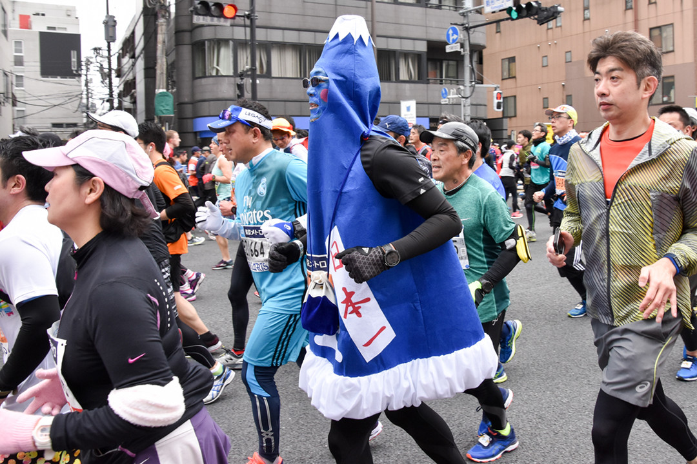

東京マラソン、大PBは突然に
～突然而至的東馬大PB～
在我这个年纪，记忆中有一部印象深刻的日本电视剧『東京ラブストーリー』。剧中主题歌『ラブストーリーは突然に』，由老牌歌手小田和正演绎的歌声总会一直在脑海中萦绕不去。而我是听着这首歌，当年在大学操场跑步追逐中意的女孩。二十余年间追到東京，女孩成为我最爱的妻子和孩子们的母亲，当人生已立将知天命之际，又重新开始奔跑向前。有缘東京，谨以此题纪念我的第一个東京馬拉松。
2017/3/19，首秀板桥城市馬拉松净成绩4:38:54，缺乏对馬拉松的敬畏，亦是实力不济的体现，加上赛前伤痛根本训练不足，必然性地在魔鬼30km崩溃😱。惨败，无🌸可说，领头大哥网叔叫我投稿没脸不能写。
2018/2/25，二战東京馬拉松净成绩3:03:31，离Sub 3 一步之遥，自我感觉是目下水平做出了最高发挥。无论相比首馬缩短95分钟，还是绝对成绩逼近3小时，突然而至而又在意料之中的大🅿️🅱️，我在尽心尽力之后唯有满足。网叔，我想发个東馬战记还收不收？
打小我是体育困难户，力量、速度、灵活性、柔韧性、协调性无一可陈。若非体育老师高抬贵手，可能我等不到毕业就要去混社会而和東京无缘。印象里大学 1000 米耐力测试，还算好自力更生馬馬虎虎混到及格。毕业后读书看碟之外我的爱好不多，一个人跑步则性价比最高：滨海道、盘山路、大操场。跑步时曾被人误指全日空国际馬拉松参赛选手，窃喜而心里暗道天方夜谭。然而也许就在那一刻，路人无心的赞许在我心里种下了一颗馬拉松的种子。
那时候没有GPS和谷歌地图，不知道跑了多远跑得多快，也从没有目标，不懂提高改善，不会热身冷却拉伸按摩，茫然无知只是大清早爬起来跑出去撒撒野就回来，凭借年轻幸好没受过伤。東渡日本直到孩子出生之前，断断续续一个人跑，面对工作生活压力，没有跑友激励支持终究不能坚持。当我经历亲人变故，痛感保持自身健康也是对家庭所负的重大责任。2016年5月22日，我在iPod上留下第一条跑步记录，洪荒之力始于壮年，于是有馬步(不)蜓(停)跑步至今。
最先不过2-3km，配速6分前后。自己能坚持还是三日坊主也心中无数，所以第一双跑鞋只敢花费3000日元，这样就算放弃也不会心疼。清楚记得第一次3km全部跑进5分配速有些小激动，慢慢地跑出第一个10km/53分钟，第一个半馬2小时10分钟，收获了好些同学朋友们的点赞。积累了信心和跑量，我报名参加了8个月后所在小城的新春路赛，第一个正式比赛取得了10km不到45分，名列40岁组别第30名（约90人中）的成绩。虽然不算多快，但有了一个看得见的成绩给我更多坚持的勇气：万万没想到这般年纪我会爱上跑步，跑步成了新的生活习惯。
跑步路上的记录
2017我只能在東馬赛道边为选手加油喝彩（现在想想幸好没中签），这也是我第一次和TCMC同人会面。全程呐喊，虽然不至于喊破喉咙，体会了那种兴奋让我对東馬对馬拉松神往不已。東馬结束不久就是我的初馬——板桥城市馬拉松。因为前面的一点小成绩，于是膨胀，觉得5分多一点配速，初馬破四岂非易如反掌？我按330完赛目标枪声响起左穿右突，上半馬仅用时1小时42分。折返之后在27km处和网叔率领的TCMC初心者大部队迎面错过。然而得意没有多久，30km撞墙如约而至，两腿同时抽筋顿时跌倒在地。总算完走没被收容，下半馬耗费近3小时真得是“走”完了大半里程。一路被无数小妹妹老爷爷超过，只留下惨不忍睹的初馬成绩。
蓝瘦😭香菇🍄
痛定思痛，重新检阅自己在咕咚上积累的全部跑步记录。回头看来竟是毫无章法可言，而值得反省之处真是太多。跑前缺乏热身，跑后要馬上赶着去上班也忽略了放松和拉伸。为节约时间几乎每次都尽量拉速度，虽然一点点快起来的同时，疲劳累积身体不堪，伤痛接踵而至相随不散。双脚轮流肿过，膝盖也久痛不愈。更因休息不彻底，伤痛加剧迟迟不能恢复。纵有微小进步却是全无效率，考虑投入产出代价真太过昂贵。本为强身健体，却带来一身伤痛，何况成绩平平，是所欲乎？瞎跑跑，我问自己不过跑步中毒而已，还敢说什么玩真跑者（ Serious Runner，我不喜严肃跑者这个翻译，跑步也很开心啊）？
先从丹尼尔斯的《跑步方程式》（Daniels' Running Formula）开时恶补训练理论，而耐力网（ center4gaming.org）上的精选文章也帮助我更深入地理解理论和掌握实践方法。微信公众号上海野蛮部落众神的跑步日志既提供训练指导，也是激励我追求上进的糖衣炮弹精神食粮：童博士严谨、特大神谐趣、陈龙霸气还有国一糯美丽可爱......，每每让我手不释卷。翻阅过无数高手的跑馬战记，尤以同为中年跑者 梅旅湖的破三记给了我不少启示和信心。更有 咕咚上无数跑者的训练动态可以供我参考学习。
身为上班族，中年跑者兼具工作家庭的重担，时间冲突其实很难执行严密的训练计划，而且身体不再年轻更伤不起。我选择follow my heart，listen to my body，与其周到计划不如确立训练模式，根据身体状况相机行事。按照训练理论，目的明确（体能、心肺、耐力、技术、速度），快慢结合， 休练相间，适度负荷（强度、速度、距离），循环渐进，长期目标，照准赛事，这几点作为指导方针我逐渐建立了一套适合自己的训练模式：
为免单调枯燥，安全第一，我还针对训练内容规划了不同的练习路线：有的便于间歇跑记时对比，有的包含上下坡道可做专项练习，有的风景怡人适合放松。而为了避免路面倾斜受力不均带来伤痛，特别留意绕圈时交叉切换方向。
从瞎跑阶段开始，幸运的是我较早注意到改进自己的跑步技术：跑姿、步频、步幅、摆腿折叠和抑制上下动。刚刚开始跑步的时候，改掉了向前扒地和向后蹬腿的不良习惯，注意落脚保持在身体重心之下，无意间养成了从前脚掌落地开始过渡到全脚掌着力的跑步姿势。我有身高腿长优势，天生较大的步幅，经过训练也逐步地把步频提高到理想的180 - 185区间，通过身体微微前倾和调整步幅来调节配速。上下动的高度和与步幅的比率，我也一直保持在比较理想的范围：7cm和6%以内。这些因素帮助我取得相当不错的跑步经济性水平，在自己速度实力并非出色的情况下，经济有效地跑步和辅以不错的耐力，我的馬拉松和10km比赛配速只有区区10秒左右的差异，几乎发挥出自己的极限。
瞎跑积累的跑量，也养成了一定的体能基础。我还想特别强调对长距离跑者而言慢跑的重要性。对于改善心血系统供血供氧能力，增强适应长跑的肌肉纤维，较快的配速反而没有效果，必须通过大量的慢跑来培养。慢跑也对改善跑步技术，提高身体基础能力（柔韧性、灵活性）避免伤痛，促成跑步习惯，以及培养信心征服长距离，都有很多的帮助。为身体提供充分的休养，加快从疲劳中恢复，慢跑也必不可少。曾经忽视慢跑的我，在开始科学训练的同时正罹患膝盖鹅掌滑囊炎，困囿慢跑而误打正着。还赶上了网叔组织的夏练三伏活动，夏日炎天🌞七、八两月连续达成300公里以慢跑为主的跑量，其实获益匪浅。
跑步的提高除了刻苦勤练，物质因素也是一个重要的方面。跑鞋恐怕是最重要的跑步装备。我的入门跑鞋便宜而笨重，缓冲和发力性能都很一般。后来结合身材条件和跑力，我选择了ASICS的虎走Tartherzeal作为我的主（唯）力（一）跑鞋：极其轻便，抓地有力，回弹给力。特别是虎走5漂亮不凡，竞速为主也提供了不错的缓冲性能。凭借虎走之力，虎虎行走如风。而有心率实时监控的佳明GPS运动手表，更对我执行训练计划，监控训练和身体状态，野外长途拉练，交流跑步心得，实在是不可或缺的神器。饮食方面，我平时碳水化合物摄取较多，强度训练的日子配合 Glico 的 BCAA 运动功能饮料，以弥补肌肉蛋白的损失。
最爱虎走
验证自己训练模式的成功，是随后成绩获得不断提升。2017年6月之前，我勉强可以425配速跑15km，半馬 PB 是1小时36分。度过夏天的煎熬，为准备彩湖第二届华人接力赛我以速度专项进行训练。11月初训练中达成新的路跑10kmPB，离40分关口只差4秒；半馬也成功地跑进了 90 分钟。经过充分准备，彩湖接力赛中我们東奔西跑群英队获得了第四名的好成绩，我的个人区间成绩也进入了全体选手的前列。
准备彩湖接力时原来只想以练代赛，追求长远目标达成，并无近期的全馬参赛计划。然而幸运来临挡都挡不住，2018東京馬拉松居然为我敞开了大门。東馬啦啦队的体验，和训练内容的充实令我对即将来到的東京馬拉松满怀憧憬和期待。虽然觉得实力还差点，仍然在心里埋下一个刻苦训练，期待超水平发挥一举破三的梦想。尤其彩湖赛前赛后状态一时绝佳，12周备战目标高远也不是遥不可及。
梦中痴语
然后是梦总有破碎时分，伤痛总是难免的。彩湖之后我继续紧张地训练，本来应该从10km速度专项，转入以节奏跑为中心的速度耐力训练。急攻心切，到底还是因为训练过度 （ overreaching ），加上前段速度专项积累了相当的疲劳，进入12月突然右脚跟腱周围炎发作。停止训练让我不堪煎熬，仓促复跑又造成左腿小腿肌肉拉伤。12月10日和東馬幸运中签者合同探路前半程，虽然是断断续续的慢跑，备受肌肉拉伤之痛，又致右脚受力过度也开始跟腱疼痛难忍，步履蹒跚几乎不能正常步行。比赛在即，年底到年初两个月月跑量却只有100km左右。又因为报名了冬练三九☃️打卡活动，不好意思拖累两位美女队友，强为坚持的结果是不得不连续休跑9天，拖到1月底才终于把脚跟腱周围炎摆脱。此时距東馬鸣枪发令只剩不到4周，原本12周的東馬训练计划完全被打乱，一时丧失了对東馬成绩的期望。想当初和龙少爷约好定期汇合30km的折返配速跑，仅仅完成一次就再不能续约；而龙少爷状态绝佳，目睹他稳健的加速跑和长距离，只留我伤悲切！
1月底大雪和寒冷天气，即便还算勤奋的我也无法做到四点半起床晨跑。伤痛解消最后不到4周的平日训练，我改在午休时间午饭之前进行。因为停训影响，即便是 5 - 7km较短距离的练习，我也很难维持和达到415之内的配速。好在公司附近就是彩虹桥🌉，返程有爬升约 50 米长 1250 米的超虐大坡，正是5度彩虹🌈帮助我在缺少力量练习的情况下极大地提升了下肢力量。事后想来，饿肚子的午休跑也对后半程耐受能量匮乏大有裨益。
倒数第4周，首先独自一人完成東馬下半程探路兼 LSD。倒数第2周在堆积残雪的路道上完成了仅有的一次30km配速跑，平均428配速最后还留有冲刺余地。减量期最后一周参加了所在小城的地区接力赛，跑了一棒3.7km平均配速353，作为最后的强度刺激。当初東馬报名时填写的预想成绩是318，最后关头虽然心存幻想，但实际上清楚今年破三并不具备现实条件。比赛直前，我公开宣称的目标是315，心里决不能跑崩以顺利完赛325BQ为底线，期待的真正目标是310之内达到男子馬拉松国家二级运动员水准。此刻我的参赛准备已全部就绪，只剩下养精蓄锐伺机待发，東馬我来了。
赛前4周称重，发现比起彩湖接力体重增加了2kg。大呼不妙，午休跑同时开始了艰难的减重过程。比赛前倒数第三日，勉强体重降到66.2kg，总算可以大开胃口积蓄碳水化合物啦。跑步前进庆应塾南门，二郎本店的大碗叉烧拉面🍜吃得真痛快。一连两天饭量猛增，怕是起跑重量又涨到 70kg 了吧。
强力补给二郎拉面
提前两天跨越彩虹桥，在台场Big Sight東馬EXPO领回参赛包，我的東馬是从负5公里开始的。EXPO会场上幸会好朋友好对手龙少爷和東京华人馬拉松一姐ミユキ，互勉各自争取好成绩：京華奮進，龍馬精神！🐉🐎
我精心准备了一色中国红🇨🇳的東馬赛衣：红色Adidas跑恤，前胸国旗贴，号码布下是🐎🚫🅿️（馬・不・停）；左肩小国旗，右肩群英队队标；背负CHINA五星标志，和我的微信号二维码（看看有没有人捕捉到馬步蜓加我微信）。除了Nike蓝色短裤，鲜红Asics虎走跑鞋，红色Mizuno护腿和红纹白短袜，配红色Puma手套，最后加上超级无敌清凉保暖高端价值500日元的灰色长袖套。万国杂牌，也挡不住我精神抖擞，只待枪声簇起一鸣惊人。
一色中国红
比赛前夜，早早入睡。5点起床，洗漱完毕，开始第一波进食：Lunch Pack 面包🍞2个合计350大卡，香蕉🍌一根，牛奶🥛一杯，BCAA也是一杯。6点离家出发，7点赶到新宿小田急百货店前和中国跑友大合影。前往检录和排队上厕所时，又陆续吃掉3块能量饼干（各100大卡），一支能量果冻180大卡，香蕉🍌一个，巧克力🍫一块。等待时间较长，发现B区那些一看就是老司机的日本跑友都席地而坐以避风寒，我亦学样坐下。而其他中国跑友可能不习惯日本式坐地上，或站或蹲。防寒长衣一直穿到起跑前15分钟，9点整吃掉出发前最后一个能量胶180大卡，嘴里含上盐丸和糖果🍬。整装待发时，我手里还有3支能量胶和糖果盐丸若干。事后证明我的赛前进食策略非常有效，既没有中途如厕时间损失，也保证了能量满膛，最后关头依然体力丰沛，完赛还剩两支能量胶可以继续下次馬拉松之旅。
2月25日午前9:10，2018東京馬拉松准时发令。按报名成绩我被分配在B区出发，因为检录较早排在前列，紧邻A区选手，离特邀精英们不过3、40米。号令同时，漫天纸樱飞舞，B区开始缓缓出发，按捺住激动我也趁机采撷纸樱🌸一枚揣进口袋以作東馬纪念。
经过两次東馬探路之旅，我对全程路线抚然胸中。事前练习脑海中可以不断浮现每个经过地。一旦开跑预知下一个转弯方向，我总能选择最经济的动线。最终佳明表轨迹里程是42.38km，出入极小。从都厅前出发先在高楼巨厦间绕来绕去，即便是A/B区也是人群拥挤，钻过山手线跑到歌舞伎町前，方才散开一些。第2.5km处开始暗闇坂・合羽坂大下坡，至6km处都有明显坡度直降高程30多米。这一段跑得轻松，心率不高，我也有闲心一路发现中国🇨🇳选手就上前招呼一声『加油！』。其中身披中金在线战袍的多伦多华人跑友RicoWeng（左二红衣，完赛249/28，加拿大第三），日前刚刚读到他在自己的東馬战记里提及我。真是跑友的圈子既大过世界，也小过方寸屏幕之间。不过和他相比我的水平差太多，不到10km我就跟丢他了。
8.5km：一时与多伦多华人跑友RicoWeng并肩
事后官方成绩记录了我的第一个10km平均配速达到409。本来说好给我们追踪照相的好朋友，赛前预测龙少爷和我的理想最快配速是409，以此推算时刻在8.5/16.5/24.5km处守候。没想到我居然能够超出赛前练习速度不少，而龙少爷也紧跟在后因而都错过了随后和晴空塔同框的机会。记得一直到 7- 8km 我身后紧跟着装扮成富士山🗻的搞怪选手招来沿途观众不断的加油喝彩，顶着这一身别扭的装束还能高速奔跑想来也是高手。

搞怪达人
渐渐身体发热起来，一路平坦我以轻松的步伐跑往 10km 日本桥头。我知道这里馬上有TCMC和华人时代以及国内参赛选手亲友团组成的🇨🇳500人大啦啦队。此前只有零零落落台湾岛来的助威团，我经过时不忘也向他们喊上一句『台湾加油，两岸加油』。然而台岛同胞却比较小气吝啬他们的喝彩助威。在五星红旗🇨🇳舞动的地方，我岂能不展示自己的光辉形象，转弯加速举手示意快步通过。我的不意而至收获了不少加油雀跃，也激起红旗翻卷涌动。按照我的配速计划，往浅草寺前需要稍微压一下速度保存体力。还没到雷门，已经看到折返回来的领先集团开始跨过隅田川。我希望能在雷门搜索到龙少爷一家的助威团，然而道路两边都是观众云集实在没有办法分辨出来。接下来前往门前仲町折返点这一段有6处小桥起伏，稍稍有点下坡。恰好遇到前后身披两块A号码牌陆连（日本田联）登录的精英女子选手速度和我相仿，于是开始紧盯不放。紧跟策略的结果是第二个 10km 平均配速410几乎没有减速。回头经过半馬中点记时牌显示出 1 小时 28 分，扣除出发时间半馬PB更新了近3分钟。
前半我吸收了板桥失意的教训，一路上每逢供应站都取运动饮料补给。高速行进中喝水真是技术活，一开始总叫水花打湿眼镜，视线一片模糊。后来才想起来要把纸杯捏扁，喝一小口就丢进垃圾箱。15km虽然并未感到能量匮乏，还是按计划吃掉第一支能量胶。粘稠甜腻的能量胶实在不好吃，开始补食的供应站抓了个小西红柿塞进嘴里，没想到呛了喉咙好失败。
折返回来再过藏前桥已是第25km，虽然回程稍微上坡，记录显示第5个5km我的配速依然达到418。此时我才发现一个重大的判断失误。先前出发时受高楼反射 GPS 信号的影响，我发挥出色而佳明表现很不给力，时不时狂乱起来显示出配速3xx（打破了1kmPB！），无法以为控制配速的依据，索性只看心率凭着感觉前行。出发以来一直以为Sub 3的兔子🐇在我前方视线不及的远方，过25km不见兔子我已经对破三全无野心。然而此时，沿途观众不断冲我的方向发出『Sub 3、加油』的助威声，纳闷之余回头才发现是兔子在向我逼近。如果早知🐰位置，采取跟随战术，前半我不用跑太快快，保存体力用在后半更容易破三。然而此时第 26km 兔子真得追上来了，我开始感到身体力竭不从心动。尤其是小腿肌肉似乎有点抽搐，让我想起板桥崩溃的可怕。我不敢维持原来的速度，必须保留体力到终点至少完成BQ目标。就在第二次经过日本桥华人啦啦队之前，无奈被兔子甩开，实在好没面子。
极度疲劳的时候，路人的热情声援真给了我前进的无穷动力。YMCA的歌声，和小朋友击掌喊嘢。尤其是回到日本桥五星红旗🇨🇳的大本营，荒川领头烟斗大哥给我一个有力的熊🐻抱，把百年内力真气输送给我，一时洗去浑身疲惫，重拾脚步快速通过日本桥和银座，还不忘在摄影师前摆出胜利姿势。
日本桥头
30-35km前往品川折返点可能是我经历最艰难的一段。回头翻看照片東京塔下🗼增上寺前⛩️，我几乎一直埋头向前不问左右，差一点错过红薯spark老弟的加油（其实我还是错过了家门口日本跑友会朋友的呼喊）。肌肉抽搐已经舒缓，然而持续不断的冲击现在开始感到脚底麻木。我振作起来主动去博取沿途观众的助威呐喊。尤其经过住友不动产三田大厦前，清脆不断的声声铃铛刺透我心，再次激活了麻木的神经。前方马上就是最后一个折返点，前面一段配速降到430 - 440，心率趋缓，身体疲劳有所恢复。哪怕追不上Sub 3🐰，最后几公里不怕爆表也要拼到底。查看事后记录，25-35km段我曾一时落后了170位，而最后7km居然又扳回名次前进120名。得益于赛前进食满格充电，25km之后我完全不需要补水和补给能量胶，也减少了不少时间损失。
沉默行军在東京塔下
日比谷公园交叉口还剩1km有余的地方，我开始最后冲刺。拐弯处我被家门口跑友会日本友人发现送来大声助威，我的专属摄影师也成功地把我捕入镜头为我留下一张最帅的東馬照片。进入丸之内仲通大道，两边夹道的观众最是热情，而我在人群中依然寻找到五星红旗🇨🇳来获取最后冲刺的动力。然而坚硬的石板路漫长无尽，第一个、第二个......交叉路口怎么好像比我探路时多出好几个。又超过去2、30人，竭力奔跑令我面目变得狞猛很不上镜。终于进入最后一个左拐，背对红色砖墙的東京站站舍，最后最后的120多米我使尽了全力，踏上终线计时毯前一刻超越了最后一人。
转进丸之内
一连穿过三道计时毯，我才放心停步。爽快，除此之外刚刚发生的一切都变成了空白，这就是我東馬终点达线的感觉。我压抑不住大喊出声，高举双手示意胜利✌。此刻我只隐约看到大约3小时4分的显示，因为不能停步阻挡其他选手的到达，一边接受终点志愿者的祝贺，一边被引导向自己的终点休息区。
终线爆发
终点之后成绩已在其次，这是我的第一个東京馬拉，现在我要忘掉曾经的失意去体会这荣光时刻。终点之后的又一公里因为充满喜悦而并不显得漫长。一路依次接过志愿者递来的饮水、防寒铝箔、充饥食物、毛巾和奖牌🏅，不断收到志愿者充满笑意和尊敬的祝贺，并不会感到疲劳和寒冷。倒是激情不能自已，我一边和同时到达的跑友交流体会，一面用中文向每一个志愿者道一声谢谢。我和很快随后到达的龙少爷（完赛308/02）汇合，向微信群里朋友各自发出成绩速报。终点等待区已经有朋友等候，第N次见面我总算认出好友麦扣王🦁，收获了他和好多朋友们的祝贺。只是很遗憾耽搁了时间，没能及时赶回日本桥当面致谢我们最棒的啦啦队。如果東馬再给我机会，还要去汲取你们给予的无穷力量。如果来年无缘，我也会化作你们中的一员。

桂冠奖牌
等静下心来仔细确认自己的成绩。Wowow，枪声成绩 3:04:14，净成绩 3:03:31。这才发现自己离3小时居然如此之近，大破目标成绩3小时10分。满意之余有一点小遗憾，终究实力不足没有能够一举破三。看分段成绩，一直到第5个5km都在Sub 3圈内，而后配速降到436。但最后2.195km奋力回升到428，佳明表没能测出来最后1km冲刺相信有400的配速。
突如其来的好成绩其实也是意料中事，毕竟我为这次東馬做到了周到的准备：
我根据自身实力，事前制定的计划也是前快后慢：前半技术动作正常就尽可能在心率允许范围内博取速度；后半程根据自己最后的30km配速 430- 440 跑练习应该不会跑崩，尚有冲刺余力。实际比赛进行过程也确实如计划所料。然而再看很多老司机和Sub 3选手，他们实力雄厚却依然抑制前半速度，后半发力一举赶上。我缺乏他们的实力和比赛经验，第一次東京馬拉松既有野心也有保留，希望下一次能够学习他们的经验，争取早日破三。
上:左中右依次为枪声成绩、净成绩、分段耗时
下:10km分段平均配速
排排坐从头看，以枪声成绩计馬拉松各项名次（个人／总人数）如下：
|
综合 |
1726／34491 |
|
男子全馬项目 |
1599／26598 |
|
45～49年龄组 |
252／6016 |
|
大陆参赛选手 |
20／865 |
|
大陆＋港澳台 |
57／2426 香港参赛者中有3名日本人成绩超过我 |
|
琦玉县 |
102／2817 |
此次東馬乱入国内参赛者微信群，认识了不少男女豪强。为他们服务和交流也给我不少乐趣和收获。他们中有Sub 3的高位高手，特别是女选手有几人已经达到来年東馬海外准精英直通标准或正在接近。期望能看到她们明年直通再战東馬。而和我一起在B区检录，事先大放烟雾弹，却一路领先我而去249/43完赛，大陆选手排行第十的南京大胡子老东西（老衲），恶狠狠地鼓励我『尽快成为二货』。我不能辜负他的期望，特此给他曝曝光。
跑步跑馬拉松，我的家人妻子和孩子们也给了我莫大的支持。是责任和义务，是感激和分享，家总是我跑馬的终点和目标。我的孩子们已经从幼儿园运动会带回家好几块奖牌，这次粑粑也带回家一块沉甸甸的真正的金色奖牌。然而，小宝问爸爸跑了第几名？有没有第5⃣名？我只能回答这次是1⃣5⃣9⃣9⃣名，遭鄙视🤔。第五名大概没有希望，就算如此，因为我是馬步蜓，还要继续向前进！
🐎🚫🅿️
附注：